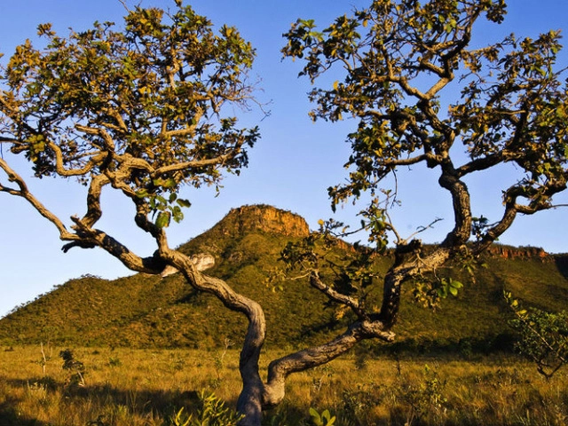
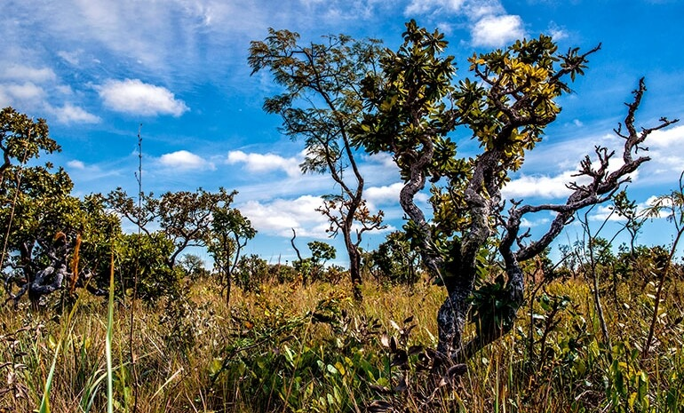
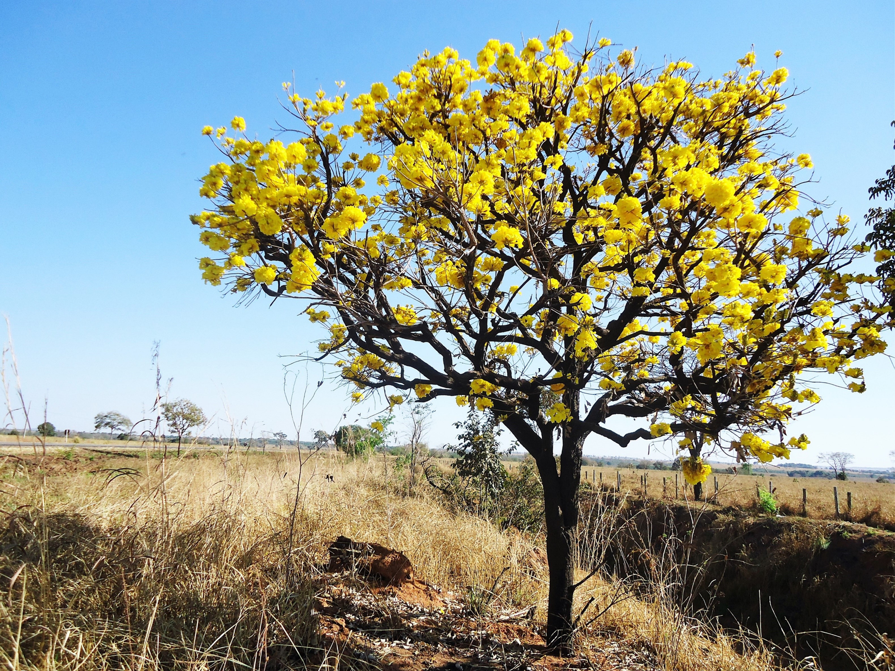
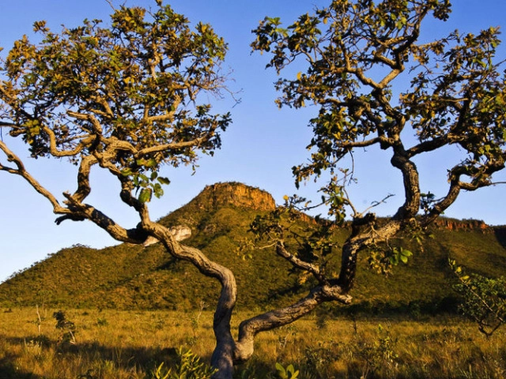
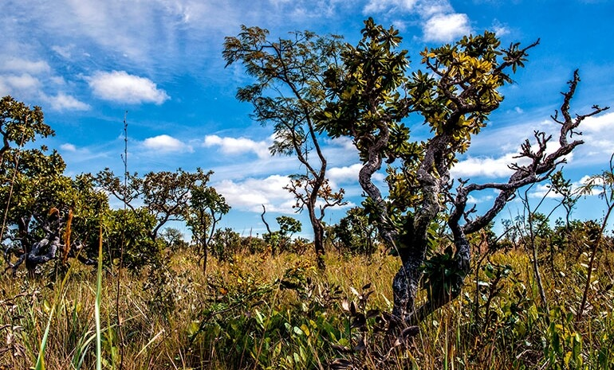
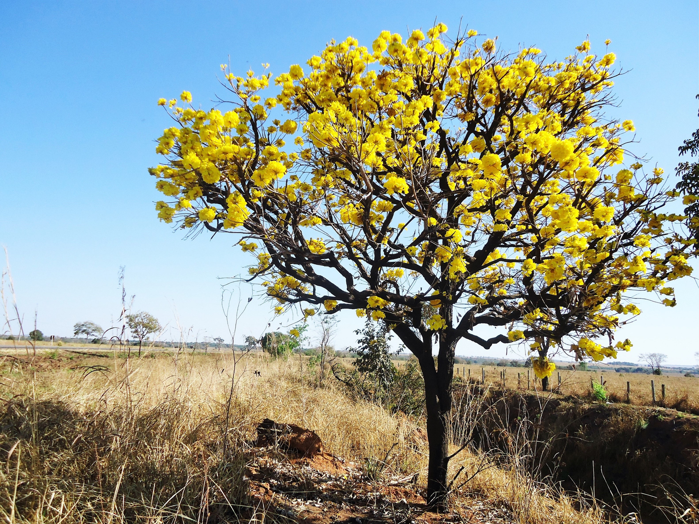
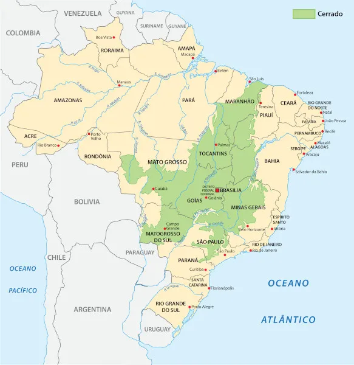

Característica do Cerrado
Conhecida como um dos biomas com maior biodiversidade do mundo, o Cerrado Brasileiro possui formação savânica e corresponde a uma área aproximada de 2,0 milhões de km2, representando em torno de 23% do território nacional. Esta área abrange o sul do Mato Grosso, o norte do Piauí, o oeste da Bahia, o sul do Maranhão, os Estados de Goiás, Tocantins, Mato Grosso do Sul, Minas Gerais, Rondônia e São Paulo, e o Distrito Federal.
O Cerrado apresenta fauna e flora extremamente rica, ressaltando as classes de frutos presentes, com características ensoriais intrínsecas e com alta qualidade nutricional, o que os tornam atraentes para serem explorados, pesquisados e comercializados. Além disso, com os avanços das tecnologias de produção, o uso da irrigação, o melhoramento genético e a necessidade de um melhor aproveitamento dos frutos para diminuir os desperdícios, o cultivo destes frutos pode vir a ser explorado fora do bioma original. Como exemplo, temos a produção de uva, pera e maçã sendo realizada na Região Nordeste do país, frutos que eram produzidos somente na região fria do País.
As plantas do Cerrado são adaptadas às condições ambientais distintas: extensos períodos de seca, outrora períodos de alta precipitação, solos pobres, grande ocorrência de incêndios e alta incidência de radiação UV. Diante disto, há a necessidade de as plantas utilizarem mecanismos de defesa para se protegerem de agentes físicos, químicos e biológicos, no decorrer do seu processo evolutivo.
Frutos do Cerrado:
Sobre
 15.28.52.jpg)
Esse site foi criada com intuito de ser informativo, para você cliente conhecer um pouco mais sobre esse bioma incrível, com várias frutas gostosas, conhecer um pouco da morfologia de cada espécie.
É com grande alegria que agradecemos por depositar sua confiança em nosso trabalho e profionalismo.
Nos empenhamos ao máximo para alcançar a qualidade que você procura e é uma grande motivação ter a aprovação de clientes especiais como você.
Obrigado por nos impulsionar à sempre desempenharmos nosso melhor trabalho!